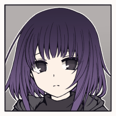

殺戮教本 ５日目
荒鹿火唯史
2D6>=5 （判定：分身の術） (2D6>=5) ＞ 9[4,5] ＞ 9 ＞ 成功
中忍頭
2D6>=5 （判定：分身の術） (2D6>=5) ＞ 3[1,2] ＞ 3 ＞ 失敗
[ 霧渡匣 ] がダイスシンボルを公開。出目は 4 です。
[ 中忍頭 ] がダイスシンボルを公開。出目は 4 です。
[ 荒鹿火唯史 ] がダイスシンボルを公開。出目は 2 です。
[ 荒鹿火唯史 ] がダイスシンボルを公開。出目は 5 です。
[ 中忍頭 ] 生命力 : 10 → 6
荒鹿火唯史
ここまでの戦いの中で、この相手が格上であることは十分に理解している。
荒鹿火唯史
それでも、慎重に、根気強く窺えば……どこかに必ず隙が見える。
中忍頭
疾る。跳ぶ、分身。その身のこなしは忍びとして洗練されている。
中忍頭
だが忍びといえども、人の身だ。いつかは呼吸のタイミングが訪れる。
霧渡匣
そして、針と同じく、いつしか森中に張り巡らせた糸。
霧渡匣
霧などではない。中忍頭を苛立たせる、霧渡匣の渡した髪。
荒鹿火唯史
ハコの渡した糸に足をかけ、その反動で中忍頭に向かって跳びかかる。
中忍頭
あと一瞬。
少しでもそこに躊躇いがあれば、迎撃が間に合ったであろう一瞬。
中忍頭
地面に一度叩きつけられてからの受け身。黒装束の隙間からは血が滴る。
霧渡匣
＊中忍頭に接近戦攻撃。
痛打を組み合わせます
霧渡匣
2D6>=5 （判定：火術） (2D6>=5) ＞ 6[1,5] ＞ 6 ＞ 成功
霧渡匣
2D6>=5 （判定：呪術） (2D6>=5) ＞ 7[2,5] ＞ 7 ＞ 成功
中忍頭
2D6>=8 （判定：伝達術） 回避 (2D6>=8) ＞ 7[1,6] ＞ 7 ＞ 失敗
[ 中忍頭 ] 生命力 : 6 → 4
霧渡匣
中忍頭の足元に絡んでいた黒絃が張り詰める。
中忍頭
回避を試みても、縫い留められた身体は動かない。
中忍頭
衝撃を受け流す事もできず、一打のエネルギーが骨を砕き、肉を潰し、体の中を駆け巡る。
中忍頭
けして浅い一撃ではない。それは実感している。
中忍頭
目に焼き付いたあの姿。
己の父を、母を、姉を、溶かし尽くした暴虐。
中忍頭
「どうしてだァッッ！！！！！！！！！！！！｝
中忍頭
胸に焼き付いた光景と目の前にある現実との差異が、軋む肉体以上に心を苛む。
中忍頭
「このような矮小な存在であっていいはずが、無いィ！」
荒鹿火唯史
2D6+1>=8 （判定：意気） (2D6+1>=8) ＞ 10[4,6]+1 ＞ 11 ＞ 成功
中忍頭
無尽蔵に思えるそれは、実際仕掛けられた罠の数を上回る。
中忍頭
言霊に呼応して針が生成される。これはそういう奥義であり、
中忍頭
従って、言霊の強さに呼応して数も、勢いも、増加する。
中忍頭
「在り得ざるものだ……あってはならぬものだ……そのようなもの……認めてなるものかァァ！」
荒鹿火唯史
無数襲い来る針を、焔が捉えて溶かしていく。
中忍頭
「お前は！ただそこに生きているだけで！私の世界を足蹴にする！！」
中忍頭
「お前が生きて！呼吸する限り！私の安息は在りえん！」
霧渡匣
中忍頭の足元には黒絃が絡み、唯史のゆく先は黒絃が導く。
荒鹿火唯史
2D6>=5 （判定：分身の術） (2D6>=5) ＞ 7[2,5] ＞ 7 ＞ 成功
中忍頭
2D6>=5 （判定：分身の術） (2D6>=5) ＞ 10[5,5] ＞ 10 ＞ 成功
[ 荒鹿火唯史 ] がダイスシンボルを公開。出目は 2 です。
[ 霧渡匣 ] がダイスシンボルを公開。出目は 4 です。
[ 中忍頭 ] がダイスシンボルを公開。出目は 1 です。
[ 荒鹿火唯史 ] がダイスシンボルを公開。出目は 5 です。
[ 中忍頭 ] がダイスシンボルを公開。出目は 5 です。
荒鹿火唯史
2D6+1>=8 （判定：意気） (2D6+1>=8) ＞ 7[2,5]+1 ＞ 8 ＞ 成功
霧渡匣
＊接近戦攻撃に痛打を組み合わせ、中忍頭を攻撃します
霧渡匣
2D6>=5 （判定：火術） (2D6>=5) ＞ 5[1,4] ＞ 5 ＞ 成功
霧渡匣
2D6>=5 （判定：呪術） (2D6>=5) ＞ 4[2,2] ＞ 4 ＞ 失敗
荒鹿火唯史
範囲攻撃＞中忍頭 意気/範囲攻撃/滅び/人数制限
中忍頭
2D6>=5 （判定：意気） (2D6>=5) ＞ 5[2,3] ＞ 5 ＞ 成功
[ 中忍頭 ] 忍具 : 1 → 0
中忍頭
2D6>=5 （判定：意気） (2D6>=5) ＞ 7[1,6] ＞ 7 ＞ 成功
荒鹿火唯史
2D6>=5 （判定：分身の術） (2D6>=5) ＞ 6[2,4] ＞ 6 ＞ 成功
中忍頭
2D6>=5 （判定：分身の術） (2D6>=5) ＞ 10[4,6] ＞ 10 ＞ 成功
[ 荒鹿火唯史 ] がダイスシンボルを公開。出目は 2 です。
[ 荒鹿火唯史 ] がダイスシンボルを公開。出目は 5 です。
[ 霧渡匣 ] がダイスシンボルを公開。出目は 4 です。
[ GM ] がダイスシンボルを公開。出目は 1 です。
[ GM ] がダイスシンボルを公開。出目は 5 です。
[ 荒鹿火唯史 ] がダイスシンボルを公開。出目は 5 です。
[ 荒鹿火唯史 ] がダイスシンボルを公開。出目は 2 です。
荒鹿火唯史
2D6+1>=8 （判定：意気） (2D6+1>=8) ＞ 6[2,4]+1 ＞ 7 ＞ 失敗
霧渡匣
2D6>=8 （判定：記憶術） (2D6>=8) ＞ 3[1,2] ＞ 3 ＞ 失敗
[ 霧渡 匣 ] 忍具 : 1 → 0
霧渡匣
2D6>=8 （判定：記憶術） (2D6>=8) ＞ 11[5,6] ＞ 11 ＞ 成功
霧渡匣
2D6>=5 （判定：火術） (2D6>=5) ＞ 7[1,6] ＞ 7 ＞ 成功
霧渡匣
2D6>=5 （判定：呪術） (2D6>=5) ＞ 6[2,4] ＞ 6 ＞ 成功
中忍頭
2D6>=8 （判定：伝達術） (2D6>=8) ＞ 5[2,3] ＞ 5 ＞ 失敗
[ 中忍頭 ] 生命力 : 4 → 2
霧渡匣
呪力の込められた糸が、その言霊をもきつく戒める。
中忍頭
言霊を封じるその糸を、引きちぎる事もできる。
だがそれに要する時間は、忍びにとっては永遠のように長い。
荒鹿火唯史
中忍頭を戒めるのが糸ならば、唯史を助けるのもまた糸。
荒鹿火唯史
足をかけて、跳んで、繰り返す都度に速度を上げる。
荒鹿火唯史
軌跡に火の粉が散り、燃え上がり、龍と化す。
中忍頭
全て断ち切れば、言霊による奥義で迎撃を行う事ができる、
霧渡匣
彼が匣の中に見出し、だからこそ認めなかったその本質の片鱗でもって、
中忍頭
身体が強張り、目が見開かれ、びくりと一度震え
中忍頭
忍びの鍛錬の賜か、業火の中に飲み込まれても断末魔の悲鳴はあがらない。
[ 中忍頭 ] 生命力 : 2 → 0
霧渡匣
その動きが完全に止まってしまうまで、糸を放すことはなかった。
霧渡匣
やがて焔とともに、呪力をも炙られ尽くした糸が焼き切れる。

霧渡匣
熱に攫われ、乾いた頬を手の甲で拭いながら、
霧渡匣
匣は唯史の隣に立ち、燃え残った灰へと視線を向ける。
GM
戦いが終わり、明け方に差し掛かった森の中は静寂に覆われる。
霧渡匣
唯史の隣、ふにゃふにゃと身体から力が抜けていく。
GM
本人の意図はどうあれ、中忍頭が里の差し向けた忍びであった事には間違いが無い。
荒鹿火唯史
傷こそ負っていないものの、ほんの一瞬の緩みが命取りとなりかねない戦いだった。
GM
ひとたび、戦いの気配は去ったと見ても良いだろう。
霧渡匣
最後まで気を抜けなかった。気を抜かなかった。
霧渡匣
それそのものは、間違いなく忍びとしての正しい在り方。
霧渡匣
質問の意図を計りかねたように、小さく首を傾げる。
荒鹿火唯史
「ほら、あれ、治ったとはいえ大怪我させた後だから……」
霧渡匣
自分の胸に手を添える。
そこから検めるように、焔を撃ち込まれた肩口をぺたぺたと触って。
霧渡匣
「休めるなら、休んだ方がいいのかもだけど……」
霧渡匣
中忍頭を討ち果たし、こちらを向く殺気は一先ず消え失せたとはいえ。
霧渡匣
唯史は村の秘宝を持ち出した身で、ハコは本来村に縛られるはずの血徒。
荒鹿火唯史
「次の追手が来る前に、できるだけ離れよう」
荒鹿火唯史
「……絶対は、ちゃんと絶対だったろ？」
荒鹿火唯史
戦いの後の、未だ冷めやらぬ熱がハコの手を包んでいる。
荒鹿火唯史
「ハコのこと守るし、はぐれても見つけに行くし」
荒鹿火唯史
「……ま、はぐれさせたりしねーけど！」
GM
闇に沈んだ夜が終わり、明日の行方は知れずとも。
GM
きっと明るくなると、そう信じてくれる人が隣にいれば。
荒鹿火唯史
「次は全然わかんねー味のやつ食べてみようぜ」